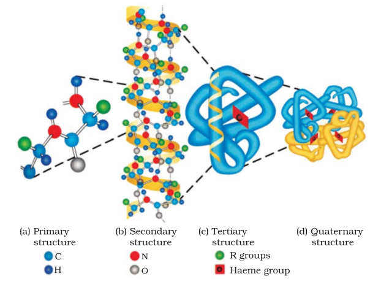

Proteins are the most abundant biomolecules of the living system. Chief sources of proteins are milk, cheese, pulses, peanuts, fish, meat, etc. They occur in every part of the body and form the fundamental basis of structure and functions of life. They are also required for growth and maintenance of body. The word protein is derived from Greek word, "proteios" which means primary or of prime importance. All proteins are polymers of α -amino acids.
Amino acids contain amino (–NH2) and carboxyl (–COOH) functional groups. Depending upon the relative position of amino group with respect to carboxyl group, the amino acids can be classified as α, β, γ, δ and so on. Only α-amino acids are obtained on hydrolysis of proteins. They may contain other functional groups also.
All α-amino acids have trivial names, which usually reflect the property of that compound or its source. Glycine is so named since it has sweet taste (in Greek glykos means sweet) and tyrosine was first obtained from cheese (in Greek, tyros means cheese.) Amino acids are generally represented by a three letter symbol, sometimes one letter symbol is also used. Structures of some commonly occurring amino acids along with their 3-letter and 1-letter symbols are given in Table 14.2.
Amino acids are classified as acidic, basic or neutral depending upon the relative number of amino and carboxyl groups in their molecule. Equal number of amino and carboxyl groups makes it neutral; more number of amino than carboxyl groups makes it basic and more carboxyl groups as compared to amino groups makes it acidic. The amino acids, which can be synthesised in the body, are known as nonessential amino acids. On the other hand, those which cannot be synthesised in the body and must be obtained through diet, are known as essential amino acids (marked with asterisk in Table 14.2).
Amino acids are usually colourless, crystalline solids. These are water-soluble, high melting solids and behave like salts rather than simple amines or carboxylic acids. This behaviour is due to the presence of both acidic (carboxyl group) and basic (amino group) groups in the same molecule. In aqueous solution, the carboxyl group can lose a proton and amino group can accept a proton, giving rise to a dipolar ion known as zwitter ion. This is neutral but contains both positive and negative charges.
In zwitter ionic form, amino acids show amphoteric behaviour as they react both with acids and bases.
You have already read that proteins are the polymers of α-amino acids and they are connected to each other by peptide bond or peptide linkage. Chemically, peptide linkage is an amide formed between –COOH group and –NH2 group. The reaction between two molecules of similar or different amino acids, proceeds through the combination of the amino group of one molecule with the carboxyl group of the other. This results in the elimination of a water molecule and formation of a peptide bond –CO–NH–. The product of the reaction is called a dipeptide because it is made up of two amino acids. For example, when carboxyl group of glycine combines with the amino group of alanine we get a dipeptide, glycylalanine.
If a third amino acid combines to a dipeptide, the product is called a tripeptide. A tripeptide contains three amino acids linked by two peptide linkages. Similarly when four, five or six amino acids are linked, the respective products are known as tetrapeptide, pentapeptide or hexapeptide, respectively. When the number of such amino acids is more than ten, then the products are called polypeptides. A polypeptide with more than hundred amino acid residues, having molecular mass higher than 10,000u is called a protein. However, the distinction between a polypeptide and a protein is not very sharp. Polypeptides with fewer amino acids are likely to be called proteins if they ordinarily have a well defined conformation of a protein such as insulin which contains 51 amino acids.
Proteins can be classified into two types on the basis of their molecular shape.
(a) Fibrous proteins
When the polypeptide chains run parallel and are held together by hydrogen and disulphide bonds, then fibre– like structure is formed. Such proteins are generally insoluble in water. Some common examples are keratin (present in hair, wool, silk) and myosin (present in muscles), etc.(b) Globular proteins
This structure results when the chains of polypeptides coil around to give a spherical shape. These are usually soluble in water. Insulin and albumins are the common examples of globular proteins. Structure and shape of proteins can be studied at four different levels, i.e., primary, secondary, tertiary and quaternary, each level being more complex than the previous one. (i) Primary structure of proteins: Proteins may have one or more polypeptide chains. Each polypeptide in a protein has amino acids linked with each other in a specific sequence and it is this sequence of amino acids that is said to be the primary structure of that protein. Any change in this primary structure i.e., the sequence of amino acids creates a different protein. (ii) Secondary structure of proteins: The secondary structure of protein refers to the shape in which a long polypeptide chain can exist. They are found to exist in two different types of structures viz. α-helix and β-pleated sheet structure. These structures arise due to the regular folding of the backbone of the polypeptide hain due to hydrogen bonding between –NH– groups of the peptide bond.
–NH– groups of the peptide bond.
α-Helix is one of the most common ways in which a polypeptide chain forms all possible hydrogen bonds by twisting into a right handed screw (helix) with the –NH group of each amino acid residue hydrogen bonded to the of an adjacent turn of the helix as shown in Fig.14.1.
Fig. 14.1: α-Helix structure of proteins
In β-structure all peptide chains are stretched out to nearly maximum extension and then laid side by side which are held together by intermolecular hydrogen bonds. The structure resembles the pleated folds of drapery and therefore is known as β-pleated sheet.
(iii) Tertiary structure of proteins: The tertiary structure of proteins represents overall folding of the polypeptide chains i.e., further folding of the secondary structure. It gives rise to two major molecular shapes viz. fibrous and globular. The main forces which stabilise the 2° and 3° structures of proteins are hydrogen bonds, disulphide linkages, van der Waals and electrostatic forces of attraction.(iv) Quaternary structure of proteins: Some of the proteins are composed of two or more polypeptide chains referred to as sub-units. The spatial arrangement of these subunits with respect to each other is known as quaternary structure.
A diagrammatic representation of all these four structures is given in Figure 14.3 where each coloured ball represents an amino acid.
Fig. 14.3: Diagrammatic representation of protein structure (two sub-units of two types in quaternary structure)

Fig 14.4: Primary, secondary, teritary and quaternary structures of haemoglobin.
Protein found in a biological system with a unique three-dimensional structure and biological activity is called a native protein. When a protein in its native form, is subjected to physical change like change in temperature or chemical change like change in pH, the hydrogen bonds are disturbed. Due to this, globules unfold and helix get uncoiled and protein loses its biological activity. This is called denaturation of protein. During denaturation 2° and 3° structures are destroyed but 1º structure remains intact. The coagulation of egg white on boiling is a common example of denaturation. Another example is curdling of milk which is caused due to the formation of lactic acid by the bacteria present in milk.